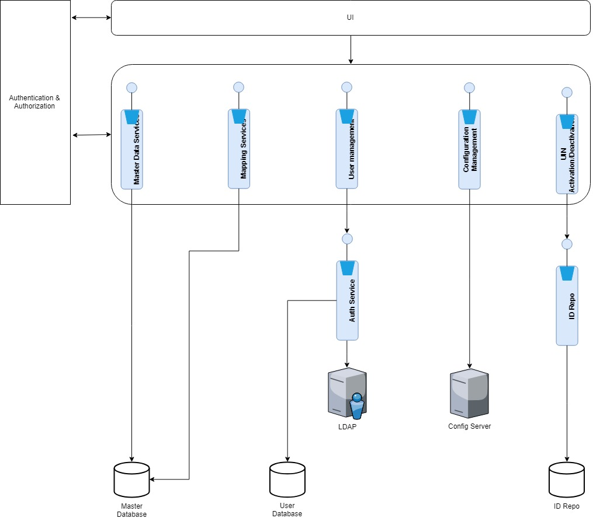
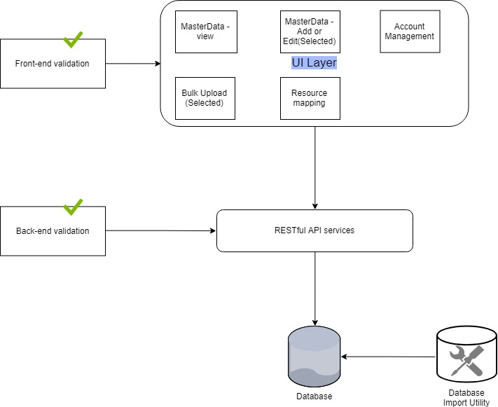

The MOSIP platform is configured via the Admin application. This application can be accessed only by the privileged group of admin personnel. When the MOSIP platform gets initialized, there are default configurations and seed data are setup. Post installation, following operations can be done using the Admin application,
Configuration entry changes
Master data management
User management
Mapping of the master data to various resources
Architecturally Significant Use Cases¶
The MOSIP Admin application is the pivot of the platform. Any changes done through the Admin application will have the ripple effect across the platform. Following are the use cases which have the impact on the architecture significantly.
Provide a single user interface to adminster the MOSIP platform¶
The MOSIP adminstrators have to be given the option to view and manage the the platform with ease.
Initial setup¶
When the platform is setup for the first time, there are some default data and configurtions are required to be available. The provisions are given to upload the data from the CSV file uploads.
Secure the services and UI¶
Admin application contains UI layer and Service layer. All the components in both Services and UI are secure and authenticated. Every component should be defined with the authorization module plugged in. For example, if a component's data is not supposed to be viewed except authorized personnel, no user will be able to view it. So is the creating, editing and deleting functionalities.
Ensuring consistency of the platform¶
The configuration options given as part of the Admin application have the direct effect on the application. Any incorrect changes done from the Admin application have the effect on the past, present and the future data. The changes must ensure the consistency and quality of the data which was collected in the system. So, the edit operation of the configuration entries should be limited only to certain properties. Sensitive properties should be routed via the maker checker policy. The sensitive parts of the configuration and data should be made sure, that proper verification is done before the changes are made effective and live. The four eye check is done for the the important features. Only during the creation of data, maker checker policy is implemented.
Logical view¶

Solution¶
Platform seed data¶
When the platform got inititalized and setup, there should be initial data should be available in the system. The initial import is done by the database utility which reads a CSV file creates the data in the database. During this import of this data, the quality of data is checked by the SI and a Database administrator. This kind of import happens only one time during the initial setup. Rest of the addition, edition of the data happens via the front end only.
Service layer¶
All the operations done on the Admin modules for the data are done through the Service layer. The authentication is done in the service layer. The validations such as business validation, mandatory validations, length validations etc., are done in the service layer also. The link to the API specifications can be found here.
UI layer¶
The UI layer supports the following salient features,
Responsive design
Authentication and authorization
Client side validations
UI layer is used only as the renderer. No business side functionality is added in the UI layer.
Validations¶
Every data insert or modifications have to be properly validated via the validator module for the respective entity. For the admin user's comfort and to avoid to and fro traffic, front end validations are added appropriately.
Flow view¶
